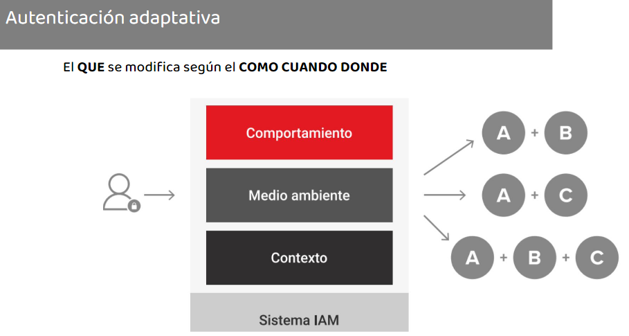

Objetivos
Conocer los fundamentos de la ciberseguridad general.Comprender la ciberseguridad en el contexto de las organizaciones.Conocer los aspectos de seguridad en redes y sistemas.Conocer los temas principales que aborda la seguridaddefensiva.Conocer los principales procesos de evaluación de seguridad ofensiva.Adquirir herramientas para potenciar las tareas profesionales
IntroducciónCriptografíaGestión de Identidades y AccesosAutenticación


Criptografía


Una PKI proporciona una infraestructuragestionada para
Creación de certificados
Mantenimiento de los certificados
Revocación de certificados
Utiliza una jerarquía de sistemas de infraestructura para crear certificados digitales. Los certificados digitales contienen la clavepública
Firma
Esteganografia:
El Arte de la Ocultación de datos ("escritura cubierta")Los archivos están ocultando informaciónadicional (secreta o sensible)Puede esconderse en una variedad de formatosImágenes (bmp, png, gif, jpg)Documentos de WordArchivos de texto
La criptografía proporciona confidencialidad pero no secretoEn la esteganografía es posible que no se detecte que se está enviando un mensajeLa verdadera intención está oculta
Identidad Digital
Referencia a una entidad y engloba en esta todas las acciones realizadas en la red. Es clave para definir el acceso y pueden cambiar con el tiempo. Confiar en el enlace entre una identidad real y una digital require VALIDACIN

Autenticación y Autorización: La identidad es lo que uno dice ser. La Autorización determina a qué tiene acceso o puede hacer alguien después de la Autenticación. La Autenticación es la validación de la identidad frente a un sistema
Estandares SAML y 0Auth2
Oauth2 estandar para facilitar la autorización. Permite a un usuario del sitio A compartir su información con el sitio BLo hace sin compartir toda su identidad, protegiendo sus credencialesSAML es un estándar orientado a SSO, integra el proceso de Autenticación.Casos de Uso - Acceso a aplicaciones desde un portal
Simple Sign-On SSO: Procedimiento para acceder a varios sistemas con una instancia de autenticación+ Reduce el uso de múltiples contraseñas+ Permite administración centralizada y reduce tiempos de soporte- Punto de falla único- Complejidad de implementación
Control y administración: El ABM debe realizarse en todos los sistemasNuevo Usuario nuevoAlta en el sistema central 『 reglas para alta en ERP, intranet y VPNBaja UsuarioBaja en el sistema central 『 reglas para baja en otros sistemasCambio de puestoBaja en algún sistema y alta en otros
Gestión de Acceso privilegiado (PAM): Es un término para designar la administración para las identidades que requieran accesos especiales por encima de los usuarios estándaresHace énfasis en PoLP (Principio del Mínimo Privilegio), asignar los accesos mínimos para desempeñar una función
Gestionar las cuentas con privilegios (Credenciales, Configuraciones)Supervisar actividad (Sesiones, acciones)Aislar accesos con privilegios y exigir MFARotar contraseñas después de su usoLimitar los Administradores LocalesGestionar y Rotar Claves SSHNo utilizar accesos compartidosRealizar ejercicios de RedTeam

Políticas y requisitos de contraseñas: Obligatorio su usoIntervalo de cambio establecidoLas cuentas se bloqueanUna letra, un número y un carácterespecialNo reutilizar las N contraseñas anteriores
Atauqes a las contraseñas Ataque del diccionarioFuerza brutaAtaque HíbridoAtaque RainbowtablesSniffingIngenieria SocialShoulder Surfing
Ejemplo de un ataque de contraseñas1.Encontrar una identificación de usuario válida2.Encuentre el algoritmo de encriptación utilizado3.Obtener la contraseña cifrada4.Crear una lista de posibles contraseñas5.Cifrar cada contraseña de la lista6.Determinar si hay una coincidencia
Se demuestra que la entidad es la identidadque dice ser a traves de :Algo que sabeAlgo que tieneAlgo que esAlgún lugar en el que esté (*)Como se comporte
